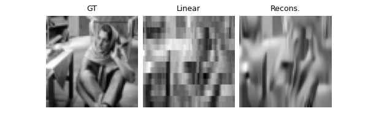
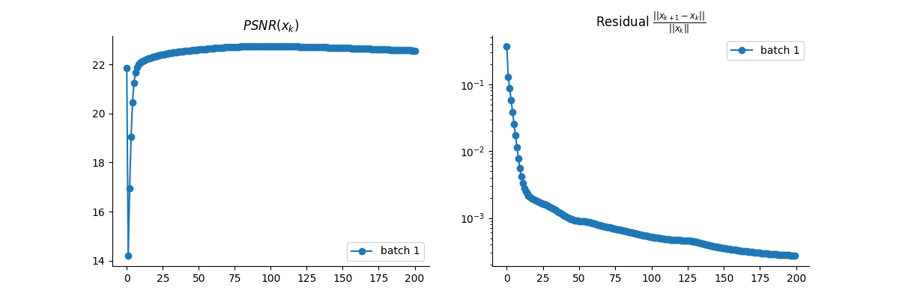

Note
Go to the end to download the full example code
PnP with custom optimization algorithm (Condat-Vu Primal-Dual)
This example shows how to define your own optimization algorithm. For example, here, we implement the Condat-Vu Primal-Dual algorithm, and apply it for Single Pixel Camera reconstruction.
import deepinv as dinv
from pathlib import Path
import torch
from deepinv.models import DnCNN
from deepinv.optim.data_fidelity import L2
from deepinv.optim.prior import PnP
from deepinv.optim.optimizers import optim_builder
from deepinv.utils.demo import load_url_image
from deepinv.utils.plotting import plot, plot_curves
from deepinv.optim.optim_iterators import OptimIterator, fStep, gStep
Define a custom optimization algorithm
Creating your optimization algorithm only requires the definition of an iteration step.
The iterator should be a subclass of deepinv.optim.optim_iterators.OptimIterator.
The Condat-Vu Primal-Dual algorithm is defined as follows:
where \(f^*\) is the Fenchel-Legendre conjugate of \(f\).
class CVIteration(OptimIterator):
r"""
Single iteration of Condat-Vu Primal-Dual.
"""
def __init__(self, **kwargs):
super().__init__(**kwargs)
self.g_step = gStepCV(**kwargs)
self.f_step = fStepCV(**kwargs)
def forward(self, X, cur_data_fidelity, cur_prior, cur_params, y, physics):
r"""
Single iteration of the Condat-Vu algorithm.
:param dict X: Dictionary containing the current iterate and the estimated cost.
:param deepinv.optim.DataFidelity cur_data_fidelity: Instance of the DataFidelity class defining the current data_fidelity.
:param dict cur_prior: dictionary containing the prior-related term of interest,
e.g. its proximal operator or gradient.
:param dict cur_params: dictionary containing the current parameters of the model.
:param torch.Tensor y: Input data.
:param deepinv.physics physics: Instance of the physics modeling the data-fidelity term.
:return: Dictionary `{"est": (x,z), "cost": F}` containing the updated current iterate
and the estimated current cost.
"""
x_prev, z_prev = X["est"]
v = x_prev - cur_params["stepsize"] * physics.A_adjoint(z_prev)
x = self.g_step(v, cur_prior, cur_params)
u = z_prev + cur_params["stepsize"] * physics.A(2 * x - x_prev)
z = self.f_step(u, cur_data_fidelity, cur_params, y, physics)
F = (
self.F_fn(x, cur_data_fidelity, cur_params, y, physics)
if self.has_cost
else None
)
return {"est": (x, z), "cost": F}
Define the custom fStep and gStep modules
The iterator relies on custom fStepCV (subclass of deepinv.optim.optim_iterators.fStep)
and gStepCV (subclass of deepinv.optim.optim_iterators.gStep) modules.
In this case the fStep module is defined as follows:
where \(f^*\) is the Fenchel-Legendre conjugate of \(f\). The proximal operator of \(f^*\) is computed using the proximal operator of \(f\) via Moreau’s identity, and the gStep module is a simple proximal step on the prior term \(g\):
class fStepCV(fStep):
r"""
Condat-Vu fStep module to compute :math:`\operatorname{prox}_{\sigma f^*}(z_k)``
"""
def __init__(self, **kwargs):
super().__init__(**kwargs)
def forward(self, u, cur_data_fidelity, cur_params, y, phyics):
r"""
Single iteration on the data-fidelity term :math:`f`.
:param torch.Tensor z: Current iterate :math:`z_k = 2Ax_{k+1}-x_k`
:param deepinv.optim.DataFidelity cur_data_fidelity: Instance of the DataFidelity class defining the current data_fidelity.
:param dict cur_params: Dictionary containing the current fStep parameters (keys `"stepsize"` and `"lambda"`).
:param torch.Tensor y: Input data.
:param deepinv.physics physics: Instance of the physics modeling the data-fidelity term.
"""
return cur_data_fidelity.prox_d_conjugate(
u, y, cur_params["sigma"], lamb=cur_params["lambda"]
)
class gStepCV(gStep):
r"""
Condat-Vu gStep module to compute :math:`\operatorname{prox}_{\tau g}(v_k)`
"""
def __init__(self, **kwargs):
super().__init__(**kwargs)
def forward(self, v, cur_prior, cur_params):
r"""
Single iteration step on the prior term :math:`g`.
:param torch.Tensor x: Current iterate :math:`v_k = x_k-\tau A^\top u_k`.
:param dict cur_prior: Dictionary containing the current prior.
:param dict cur_params: Dictionary containing the current gStep parameters
(keys `"stepsize"` and `"g_param"`).
"""
return cur_prior.prox(v, cur_params["stepsize"], cur_params["g_param"])
Setup paths for data loading and results.
BASE_DIR = Path(".")
RESULTS_DIR = BASE_DIR / "results"
Load base image datasets and degradation operators.
# Set the global random seed from pytorch to ensure reproducibility of the example.
torch.manual_seed(0)
device = dinv.utils.get_freer_gpu() if torch.cuda.is_available() else "cpu"
# Set up the variable to fetch dataset and operators.
method = "PnP"
dataset_name = "set3c"
img_size = 64
url = (
"https://mycore.core-cloud.net/index.php/s/"
"9EzDqcJxQUJKYul/download?path=%2Fdatasets&files=barbara.jpeg"
)
x = load_url_image(
url=url, img_size=img_size, grayscale=True, resize_mode="resize", device=device
)
operation = "single_pixel"
Set the forward operator
We use the deepinv.physics.SinglePixelCamera
class from the physics module to generate a single-pixel measurements.
The forward operator consists of the multiplication with the low frequencies of the Hadamard transform.
noise_level_img = 0.03 # Gaussian Noise standard deviation for the degradation
n_channels = 1 # 3 for color images, 1 for gray-scale images
physics = dinv.physics.SinglePixelCamera(
m=100,
img_shape=(1, 64, 64),
noise_model=dinv.physics.GaussianNoise(sigma=noise_level_img),
device=device,
)
# Use parallel dataloader if using a GPU to fasten training,
# otherwise, as all computes are on CPU, use synchronous data loading.
num_workers = 4 if torch.cuda.is_available() else 0
Set up the PnP algorithm to solve the inverse problem.
We build the PnP model using the deepinv.optim.optim_builder() function,
and setting the iterator to our custom CondatVu algorithm.
The primal dual stepsizes \(\tau\) as stepsize and \(\sigma\) as sigma,
g_param the noise level of the denoiser and lambda the regularization parameter.
# Set up the PnP algorithm parameters :
params_algo = {"stepsize": 1.0, "g_param": 0.01, "lambda": 0.5, "sigma": 1.0}
max_iter = 200
early_stop = True # stop the algorithm when convergence is reached
# Select the data fidelity term
data_fidelity = L2()
# Specify the denoising prior
denoiser = DnCNN(
in_channels=n_channels,
out_channels=n_channels,
pretrained="download",
train=False,
device=device,
)
prior = PnP(denoiser=denoiser)
# instantiate the algorithm class to solve the IP problem.
iteration = CVIteration(F_fn=None, has_cost=False)
model = optim_builder(
iteration=iteration,
prior=prior,
data_fidelity=data_fidelity,
early_stop=early_stop,
max_iter=max_iter,
verbose=True,
params_algo=params_algo,
)
Evaluate the model on the problem and plot the results.
The model returns the output and the metrics computed along the iterations.
The ground truth image x_gt must be provided for computing the PSNR.
y = physics(x)
x_lin = physics.A_adjoint(y)
# run the model on the problem. For computing the metrics along the iterations, set ``compute_metrics=True``.
x_model, metrics = model(y, physics, x_gt=x, compute_metrics=True)
# compute PSNR
print(f"Linear reconstruction PSNR: {dinv.utils.metric.cal_psnr(x, x_lin):.2f} dB")
print(f"Model reconstruction PSNR: {dinv.utils.metric.cal_psnr(x, x_model):.2f} dB")
# plot results
imgs = [x, x_lin, x_model]
plot(imgs, titles=["GT", "Linear", "Recons."], show=True)
# plot convergence curves
plot_curves(metrics, save_dir=RESULTS_DIR / "curves", show=True)
- 
- 
Linear reconstruction PSNR: 21.87 dB
Model reconstruction PSNR: 22.57 dB
Total running time of the script: (0 minutes 7.336 seconds)